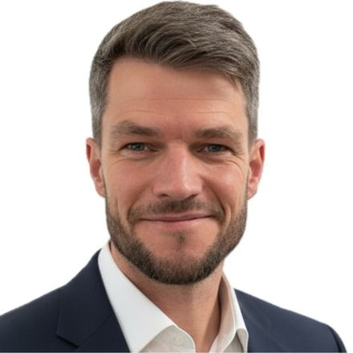

Interim: zarządzanie portfelem i ryzykiem
Obsadzenie wakatu w zarządzaniu portfelem lub ryzykiem – szybki start i doświadczenie zarówno po stronie handlu, jak i aktywów.
Portfel, strukturyzacja i ryzyko w handlu energią – z ilościową precyzją.
Realizuję projekty interim w zarządzaniu portfelem i ryzykiem dla firm energetycznych, strukturyzuję i wyceniam elastyczne kontrakty oraz wspieram negocjacje z kontrahentami.

Typowe projekty obejmują zarówno szybkie obsadzenie wakatu, jak i wycenę złożonych struktur kontraktowych.
Obsadzenie wakatu w zarządzaniu portfelem lub ryzykiem – szybki start i doświadczenie zarówno po stronie handlu, jak i aktywów.
Tworzenie i przegląd strategii hedgingowych, referencyjnych reguł zabezpieczeń i systemów limitów dla dużych pozycji.
Wycena magazynów gazu, elastycznych umów dostaw, przepustowości przesyłowej oraz kontraktów zależnych od pogody.
Wsparcie w negocjacjach z operatorami magazynów i kontrahentami, aukcjach przepustowości i wewnętrznych procesach zatwierdzania.
Kwantyfikacja elastyczności i ryzyka: magazyny energii (BESS), elastyczne umowy przyłączeniowe, ograniczenia OZE, elektromobilność.
Seminaria z matematyki energetycznej, krzywych forward, wyceny ryzyka rynkowego i decyzji inwestycyjnych.
Nazywam się Markus Schicks i wywodzę się z matematyki: doktorat z analizy stochastycznej na Swansea University, a następnie dwa i pół roku dydaktyki i badań ze stochastyki na TU Braunschweig.
W 2010 roku przeszedłem do sektora gazowego i przez ponad dziesięć lat pracowałem w RWE i Uniper – najpierw w zarządzaniu ryzykiem towarowym, potem przy strukturyzacji i wycenie umów magazynowych i elastycznych dostaw, a także jako Commercial Manager Gas Storage.
Dziś łączę projekty interim z rolą współzałożyciela i prezesa zarządu Qmesa w Gdańsku, gdzie to samo ilościowe podejście stosujemy do rynków energii elektrycznej, elastyczności i ograniczeń sieciowych.
Kwantyfikacja elastyczności i ryzyka dla przedsiębiorstw energetycznych, właścicieli aktywów i inwestorów w Europie; platforma analityczna Energy Workbench.
Projekty interim w zarządzaniu portfelem energetycznym, strukturyzacji i ryzyku.
Główny punkt kontaktu z europejskimi operatorami magazynów; aukcje przepustowości, negocjacje bilateralne, umowy o wartości kilkudziesięciu milionów euro.
Strukturyzacja i wycena umów magazynowych, elastycznych dostaw i przesyłu; model wyceny umów zależnych od temperatury; projekty ML do prognozowania pozycji.
Nowe ramy zarządzania ryzykiem dla dużych pozycji aktywów, w tym reguły zabezpieczeń i limity; materiały decyzyjne dla zarządu.
Ćwiczenia i seminaria; badania nad estymacją dla procesów Lévy'ego.
A three-factor model on the natural gas forward curve including temperature forecasts ↗
Journal of Energy Markets
Prognozowanie cen z wykorzystaniem uczenia maszynowego
Journal of Energy Markets
Potrzebują Państwo szybkiego wsparcia w zarządzaniu portfelem lub ryzykiem albo wyceny struktury kontraktu? Zapraszam do kontaktu.